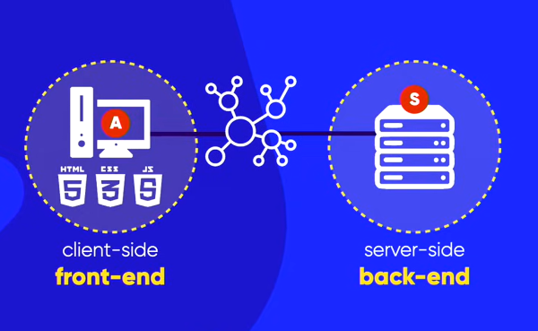

Git é um sistema de controle de versão distribuído que permite que desenvolvedores rastreiem mudanças em arquivos e colaborem em projetos de software. Ele foi criado por Linus Torvalds em 2005 para ajudar no desenvolvimento do kernel do Linux.
GitHub, por outro lado, é uma plataforma de hospedagem de código-fonte que utiliza o Git como sistema de controle de versão. Ele oferece uma interface web para gerenciar repositórios Git, facilitando a colaboração entre desenvolvedores, o rastreamento de problemas e a revisão de código.
Em resumo, Git é a ferramenta de controle de versão, enquanto GitHub é um serviço que hospeda repositórios Git e oferece funcionalidades adicionais para facilitar o desenvolvimento colaborativo.
Versionamento de software é o processo de atribuir números ou códigos únicos a diferentes versões de um software à medida que ele evolui ao longo do tempo. Isso permite que os desenvolvedores rastreiem mudanças, corrijam bugs e adicionem novas funcionalidades de maneira organizada.
O versionamento ajuda a manter um histórico claro do desenvolvimento do software, facilitando a colaboração entre equipes e permitindo que os usuários identifiquem e utilizem versões específicas do software conforme necessário.

Veja agora como o Git e o GitHub se encaixam nesta operação acima

Agora que já entendemos bem como funciona um versionamento de software, vamos nos aprofundar nos conteúdos de Front-End e Back-End
- Desenvolvedor client side
Desenvolve projetos utilizando HTML, CSS, JavaScript, etc
- Desenvolvedor server side
Desenvolve projetos utilizando PHP, Java, C##, Python, Ruby, etc
Agora que já entendemos a diferença entre Front-End e Back-End, vamos entender o que é Full-Stack
O desenvolvedor Full-Stack atua tanto no desenvolvimento da parte Front-End quanto Back-End de um projeto
Aqui vai um exemplo desse fluxo de trabalho na prática

Neste caso, a linguagem utilizada no front-end não consegue se comunicar diretamente com o banco de dados para obter a informação necessária (O estoque da camiseta que o cliente deseja comprar por exemplo).
Portanto quem executa essa comunicação e transcrição da informação seria o Back-End da operação, devolvendo a mesma para a parte de Front-End em uma linguagem padrão de comunicação entre o banco de dados
Algumas ferramentas de desenvolvimento são as bases do Front-End e muito utilizadas, principalmente para o desenvolvimento de sites, são elas:
Linguagem de marcação utilizada para estruturar o conteúdo da web
Linguagem de estilo utilizada para definir a aparência visual do conteúdo web
Linguagem de programação utilizada para adicionar interatividade e funcionalidades dinâmicas aos sites